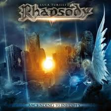
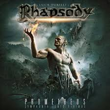

Luca Turilli (born 5 March 1972) is an Italian composer, arranger and producer, keyboardist, pianist and guitar player constantly engaged in various musical projects.
Having always declared to love music at 360 degrees, Turilli has dedicated himself to multiple musical genres, ranging from trance and electronic music of his first compositions to symphonic progressive metal inspired by the world of soundtracks and also to modern pop / rock and piano compositions of his current productions.
He is one of the founders of the symphonic power metal band Rhapsody, later called Rhapsody of Fire. He also worked on a trilogy of solo albums as Luca Turilli, and released one album under the name of Luca Turilli's Dreamquest, a symphonic metal / rock project combined with electro pop elements he worked on alongside Dominique Leurquin.

Projects
Rhapsody (of Fire)
Rhapsody of Fire (formerly known as Rhapsody) is an Italian symphonic power metal band formed by Luca Turilli and Alex Staropoli, widely seen as a pioneer of the symphonic power metal subgenre.
Luca Turilli's Rhapsody
 Luca Turilli's Rhapsody (often simply referred by itself as Rhapsody, LT's Rhapsody or Turilli's Rhapsody) was an Italian symphonic power metal band created and led by Luca Turilli after his split from Rhapsody of Fire, also including German, French and Finnish members. The band members referred their style as "Cinematic metal" to underline Luca Turilli's passion for the world of cinema and the soundtracks, yet the main influence of his new artistic proposal.
Turilli/Lione Rhapsody
Turilli / Lione Rhapsody is an Italian symphonic metal band formed on December 5, 2018 by former Rhapsody of Fire members Luca Turilli and Fabio Lione. The lineup also includes former Rhapsody of Fire members Alex Holzwarth, Patrice Guers, and Dominique Leurquin. Prior to the band's formation, the same lineup performed under the Rhapsody moniker for the 20th Anniversary Farewell Tour, which celebrated 20 years of the original band's existence.